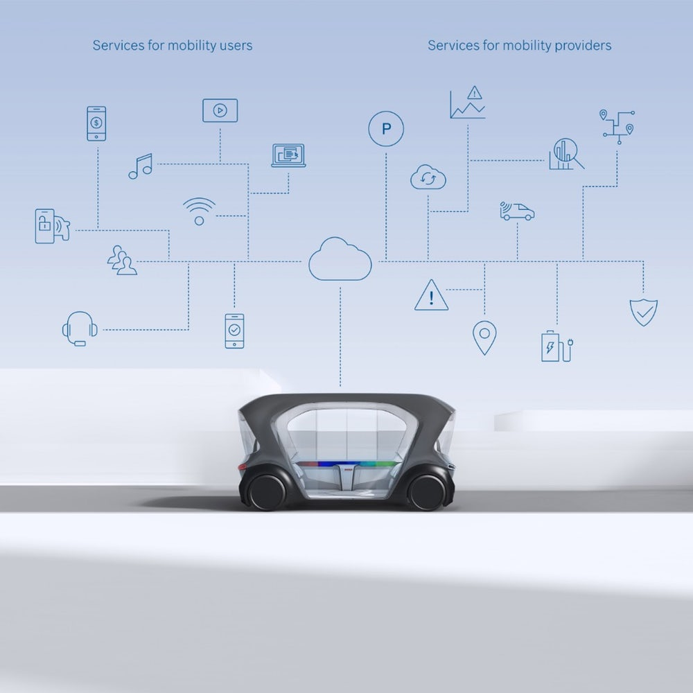
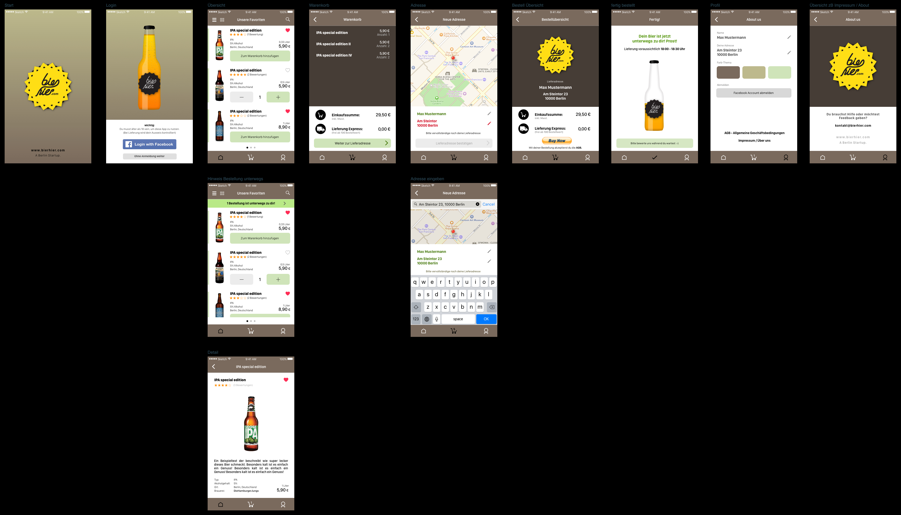
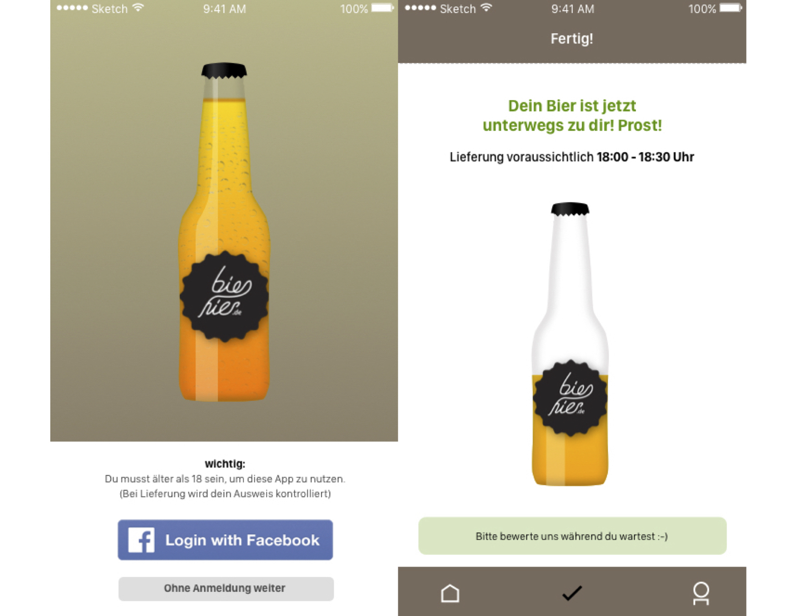

Berlin inspired me to challenge myself culturally, professionally and even physically. I was determined to run in the 2019 half-marathon as a way of saying "Auf Wiedersehen" to the city that had given me so much (I successfully completed the race...yay pain!). I have gained a tremendous amount of experience during the four years I worked within the dynamic Berlin tech-scene, often jokingly refered to as "Silicon Allee." I helped forge many different projects, wearing many different "hats" and obtained invaluable leadership experience, although most crucially I fell in love with Design. I discovered my true passion for product development and my insatiable ability to question almost everthing in front of me was instrumental in crafting my UX career path.

Working at Bosch, Sunnyvale has quite simply been an amazing experience. I was not only able to hone my UX skills, but I was also formally introduced to a whole new business sector; a traditional Tier1 that aims to produce quality, scalable automotive products. Autonomous vehicles have opened a new era for traditional customers like OEMs, but they have also dramatically changed the outlook of mobility providers. AVs need services and sub-services to operate effectively and these can be licensed by a large third party like Bosch. IVS or In-Vehicle-Sensing was the largest project Bosch unveiled at CES 2019 and it was my laser-focus for the entirety of my time there.
I was in charge of developing:
lean-personas
Hi-Fi wireframes
demos of our test vehicle
I had the opportunity to work on:
visuals for Bosch's CES 2019 presentation of the IVS system
contribute as an actor in the filmed CES presentation
Learning from the UX team here at Bosch and seeing the level of their deliverables was of key importance to me. I really wanted to be able to juxtapose my level of design with their expectations. I got what I wanted and I have grown so much as a designer because of it.
*In the interest of Bosch and for confidentiality I cannot share my work directly on this website.*

The Bier-Hier concept was fully crystalized a couple of years into my new life in Berlin, as I was at this point fully immersed in the Berlin lifestyle and culture. Ich bin ein Berliner! I saw a dire need for craftbeer to become more mainstream. My friends and coworkers were all yearning for this fledgling industry to become more accesible to them outside of just the small breweries producing the beer. Berlin is teeming with vibrant nightlife and has a 24hr beer scene due to the corner-store or "späti" culture, however craftbeer was not as easy to obtain as one might think. Thus Bier-Hier was born! A craftbeer delivery service in the palm of your hand! I designed the iOS app and wrote the overall business plan. As a founder I was also required to pitch the idea to investors and secure vital VC funding.

This beer-themed delivery status tracker was one of my favorite screens due to its playful design and the fundamental user utility it provided. The beer image on the loading screen fills as the beverage order makes its way to the customer. Combining utility, brand and entertainment-value was the goal. The major pain-point of the customer in this business is the time spent waiting for their purchases to arrive and the uncertainty of when the beverages will get to their final destination contributes to a more negative view of the service.
*This App inspired Durstexpress GmbH which is still operating today.*
Please contact me via email to view my full portfolio